Dashboards
Dashboards
Usuários
Usuários
Máquinas
Máquinas
Perfil
Perfil
Sair
Sair
Visão geral de suas máquinas
Aqui, você pode consultar de forma geral como estão seus processos em relação aos totens de autoatendimento, verificando aqueles que estão em conformidade com o padrão, os que estão em alerta e os que apresentam problemas generalizados.
As legendas correspondentes podem ser encontradas na parte inferior da tabela.
Minhas máquinas cadastradas
Nome da máquina
Status
Totem teste 1
🚨
Totem teste 2
⚠️
Totem teste 3
✅
Totem teste 3
✅
Totem teste 3
⚠️
Totem teste 3
✅
Totem teste 3
⚠️
✅
As capturas estão de acordo com o esperado.
⚠️
As capturas não estão de acordo com o esperado, requerer atenção.
🚨
As capturas estão de registrando dados extremanete prejudiciais, requer urgência.
Clique aqui para visualizar suas máquinas individualmente